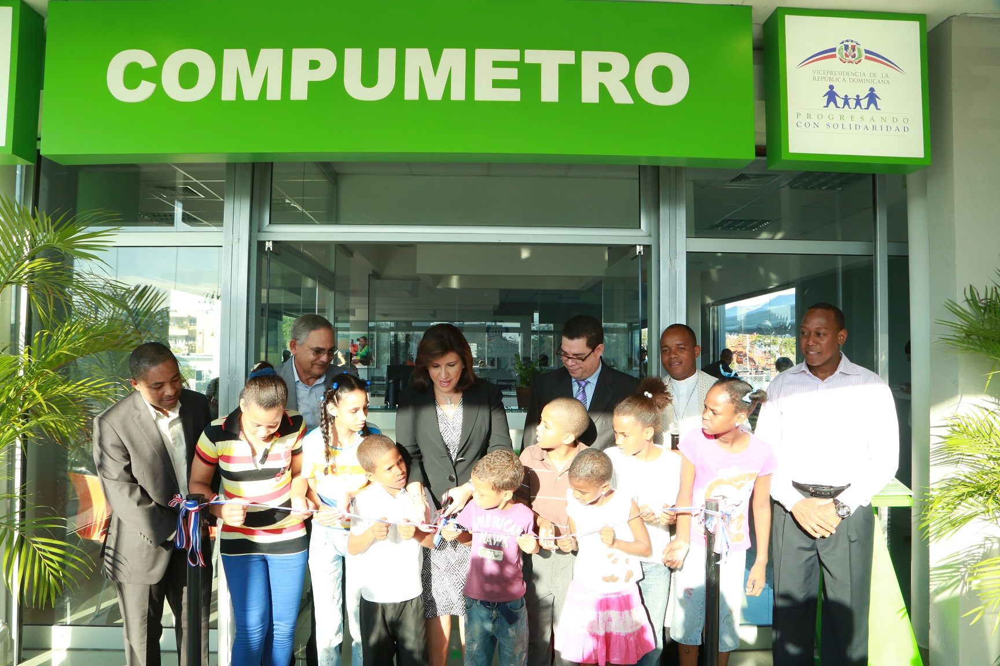

Inicio |
Quienes somos |
Nuestros Cursos |
Contacto |
Empleos |
Inicio |
Quienes somos |
Nuestros Cursos |
Contacto |
Empleos |
|  |
Los Compumetros: son espacios tecnológicos diseñados para ofrecer servicios gratuitos de información tanto en formatos digitales como físicos. Se encuentran ubicados en las estaciones del Metro de Santo Domingo. |

|

|
Facilitan el acceso a la tecnología y sirven como puntos estratégicos para la animacion y la promoción de lectura en el caso urbano. Con este proyecto se contribuye con el cierre de la becha digital, pues la posibilidad de utilizar la tecnología de punta y de involucrase con el mundo de la lectura en un ambiente totalmente sano y abierto, empodera al ciudadano. |

|